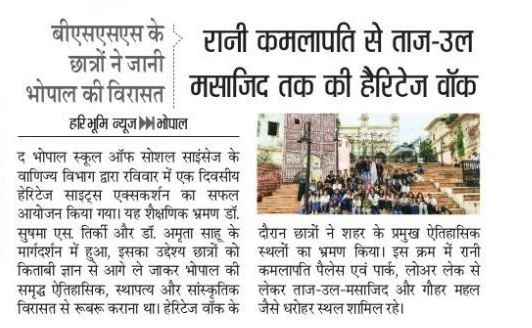

Heritage & Experiential Learning
Bhopal School of Social Sciences students discover the city’s heritage
A heritage walk from Rani Kamlapati Palace to Taj-ul-Masajid

As reported in Hari Bhoomi News, Bhopal.
Bhopal: In a step towards blending academics with experiential
learning, the Department of Commerce at Bhopal School of Social Sciences (BSSS)
successfully organized a one-day Heritage Sightseeing Excursion for its students. The initiative was
designed to move learning beyond the classroom and give students a first-hand, immersive experience of
Bhopal’s historical depth and cultural character.
The excursion was thoughtfully planned and supervised under the guidance of Dr. Sushma S.
Tirkey and Dr. Amrita Sahu, whose mentorship shaped the academic purpose behind
the trip. The core objective was to help students connect more closely with the city they study in —
introducing them to Bhopal’s rich historical legacy, its architectural grandeur, and its layered
cultural traditions.
As part of the heritage walk, students toured several of the city’s most iconic landmarks, tracing a
route that captured different eras of Bhopal’s history.
The walk, step by step
1. Rani Kamlapati Palace and Park — where
the walk began.
2. Along the scenic Lower Lake.
3. Taj-ul-Masajid — one of India’s
largest mosques.
4. Gohar Mahal — known for its unique
blend of Hindu and Islamic architectural styles.
The excursion gave students a meaningful opportunity to engage with heritage education outside textbooks, reinforcing BSSS’s ongoing commitment to experiential and value-based learning.
Planned and supervised by
Dr. Sushma S. Tirkey and Dr. Amrita Sahu
Department of Commerce, Bhopal School of Social
Sciences
The same idea, in a headset
A walk like this is heritage education at its best — standing in front of the thing itself. It is the same instinct behind our VR centres: when a site is too far, too fragile or too long gone to visit, a 360° experience can still put a student inside it. Bhopal’s students walked to Taj-ul-Masajid and Gohar Mahal; through Aankhon Dekha, students across Madhya Pradesh travel to Bhimbetka, Sanchi, Mandu and Orchha the same way.
Learning On Foot
A one-day excursion that moved the classroom out into the city itself.
Four Landmarks
Rani Kamlapati Palace, Lower Lake, Taj-ul-Masajid and Gohar Mahal in a single route.
Layered History
A route tracing different eras of Bhopal’s architectural and cultural story.
Beyond Textbooks
Part of BSSS’s ongoing commitment to experiential and value-based learning.
Source: Hari Bhoomi News, Bhopal.